Üç konsept, Türkçe ve İngilizce. Her biri akış (4:5) ve hikâye/reels (9:16) için. Görseller mağaza ekran görüntüleriyle aynı yazı tipi, renk ve uygulama ekranlarından üretildi. Onaylarsan iki kampanyada üçü birlikte denenir; Meta iyi çalışana daha çok bütçe verir.
Akış 1080 × 1350Hikâye 1080 × 1920Deneme ve fiyat yazmıyorDüğme: Yükle / Install now
Konsept 1Her gün bir eser
Türkçe
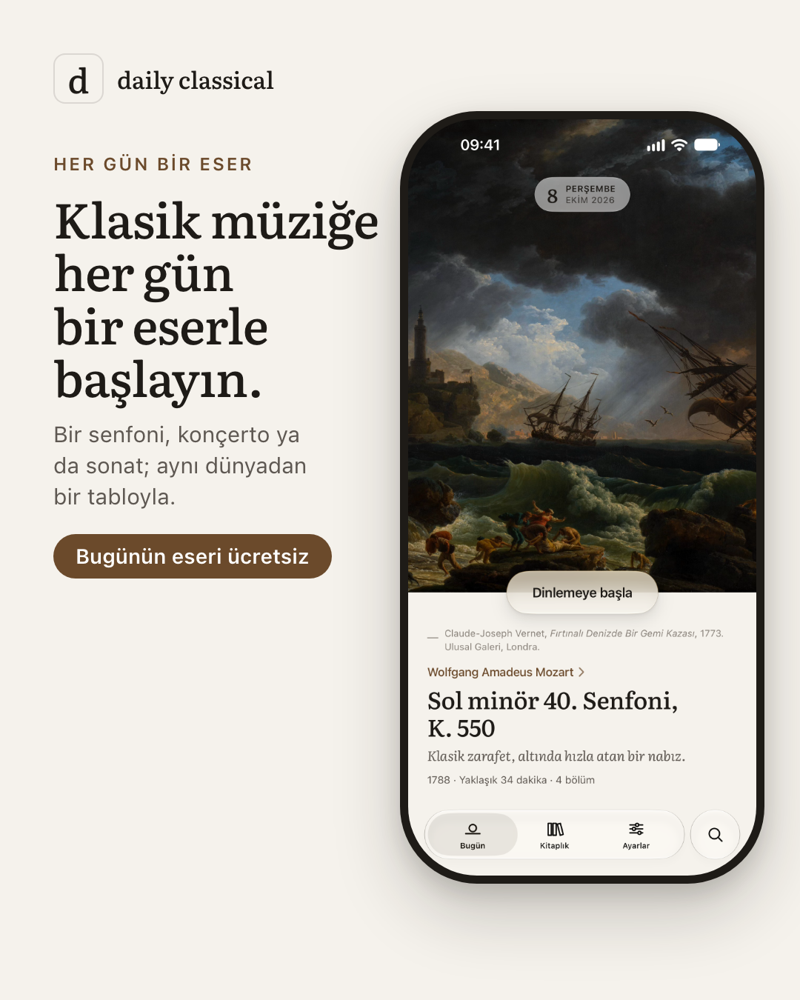
Akış 4:5
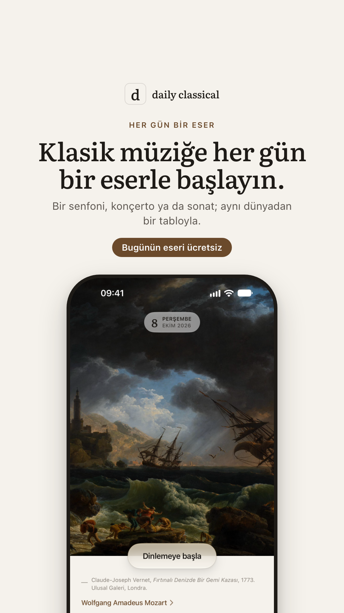
Hikâye 9:16
Ana metin
Her gün bir senfoni, konçerto ya da sonat; ne dinleyeceğinizi dakika dakika anlatan bir rehber ve aynı dünyadan bir tabloyla.
Başlık
Klasik müziğe her gün bir eserle başlayın
English
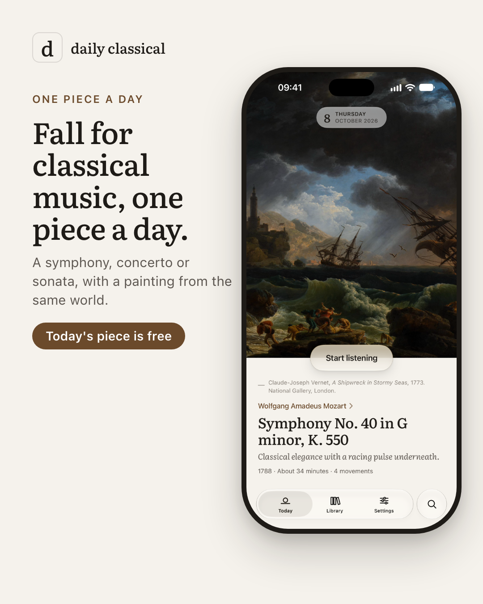
Feed 4:5Story 9:16
Primary text
A symphony, concerto or sonata every day, with a minute-by-minute listening guide and a painting from the same world.
Headline
Fall for classical music, one piece a day
Konsept 2Dinleme rehberi
Türkçe
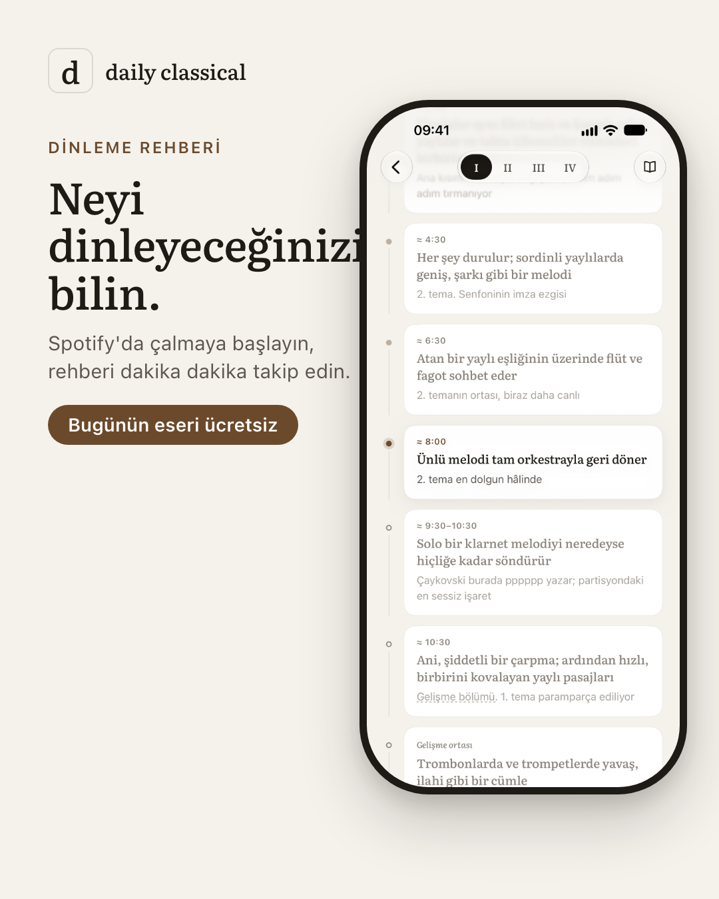
Akış 4:5
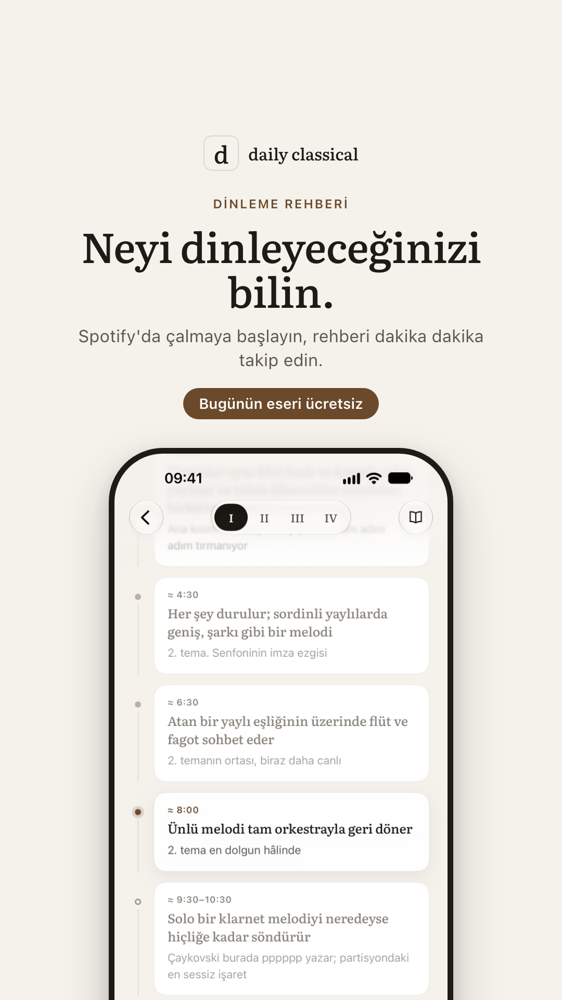
Hikâye 9:16
Ana metin
Eseri Spotify'da açın, rehber size neyi dinleyeceğinizi dakika dakika söylesin. Temalar, dönemeçler, kaçırılmaması gereken anlar.
Başlık
Neyi dinleyeceğinizi bilin
English
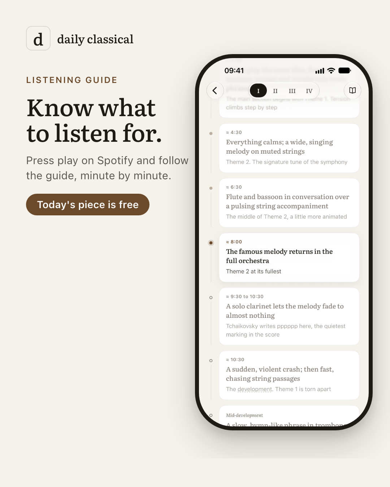
Feed 4:5
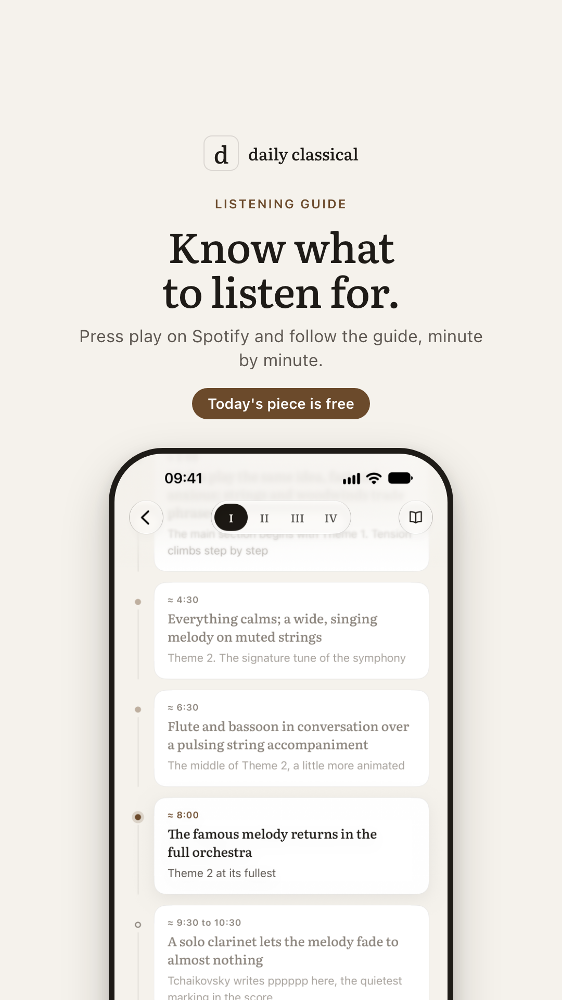
Story 9:16
Primary text
Press play on Spotify and let the guide tell you what to listen for, minute by minute: the themes, the turns, the moments not to miss.
Headline
Know what to listen for
Konsept 3Müzik bilgisi gerekmez
Türkçe
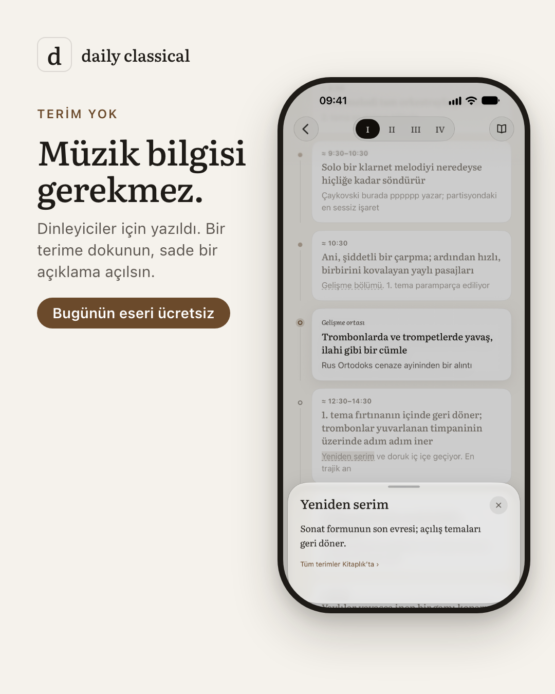
Akış 4:5
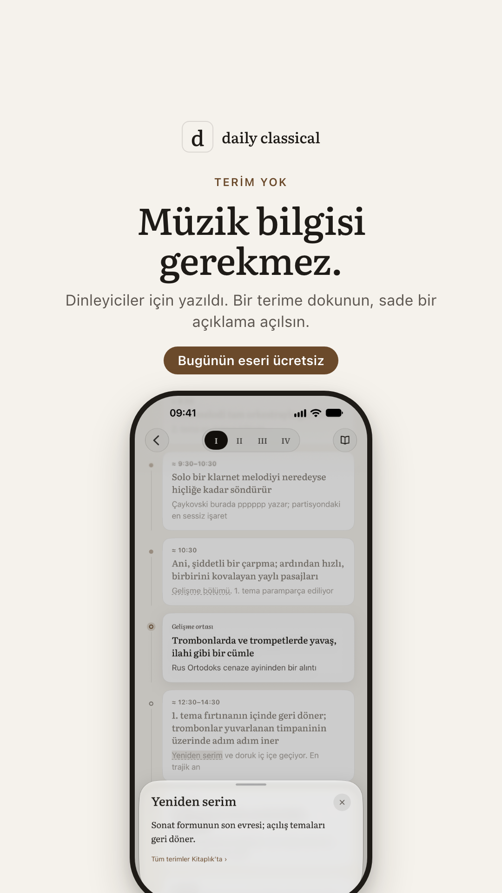
Hikâye 9:16
Ana metin
Dinleyiciler için yazıldı, müzisyenler için değil. Bir terim geçtiğinde dokunun, kısa ve sade bir açıklama açılsın.
Başlık
Müzik bilgisi gerekmez
English
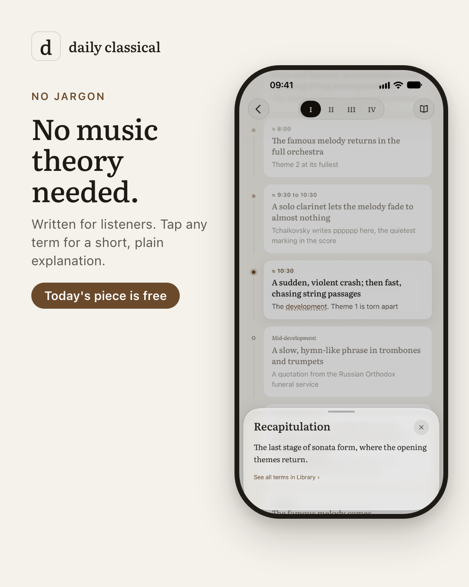
Feed 4:5
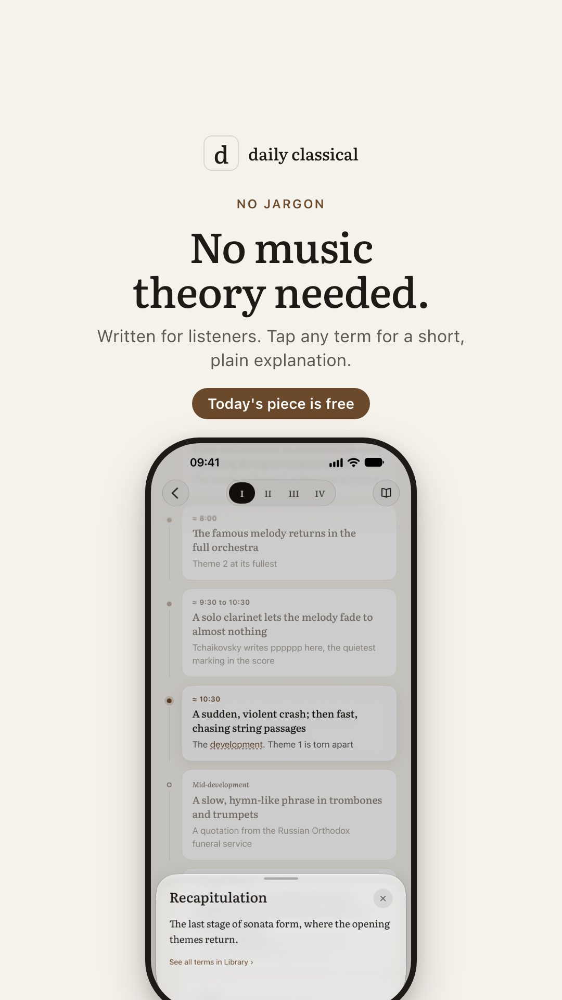
Story 9:16
Primary text
Written for listeners, not musicians. When a musical term comes up, tap it for a short, plain explanation.
Headline
No music theory needed
KampanyaNasıl kullanılacak
İki kampanya: Türkiye (TR metinler) ve İngilizce konuşulan ülkeler: ABD, Birleşik Krallık, Kanada, Avustralya, İrlanda, Yeni Zelanda (EN metinler).
Amaç uygulama tanıtımı (yükleme); yerleşim Instagram akış, hikâye ve reels. Her kampanyada üç konsept birlikte.
Toplam ilk test bütçesi ₺3.000–5.000, 7–10 gün. Yayına alma senin onayınla.
Görsellerde ve metinlerde deneme süresi ya da fiyat geçmiyor; "Bugünün eseri ücretsiz" uygulamanın gerçek durumu.